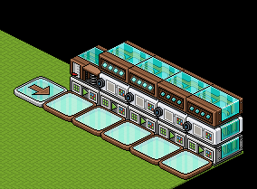
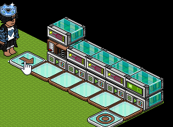

|
|
|
Bedeutung der Auslösequelle im Wired-Tool
Die Bezeichnung "Auslösequelle" wurde zu den einzelnen Steckbriefen im Wired-Tool hinzugefügt, aber was ist darunter zu verstehen und welche Rolle spielt es?
Seitdem es die Erweiterte Einstellung in den meisten Wireds gibt, ist das Thema Userquelle und Möbelquelle im Fokus geraten. Dieser Artikel geht jedoch nicht auf die Erweiterte Einstellung ein, sondern behandelt nur die "Auslösequelle" im Allgemeinen. Hierbei ist wichtig zu wissen, dass Userquelle und Auslösequelle nicht dasselbe sind. Der wesentliche Unterschied zwischen ihnen besteht darin, dass der auslösende Typ immer zur Auslösequelle dazugezählt wird, aber nicht unbedingt zur Userquelle gehört. In diesem Artikel kürzen wir Auslösequelle von nun an mit AQ ab.
Was ist unter AQ zu verstehen?
Habbo User, Bots oder Haustiere können Wireds auslösen, daher werden sie zur AQ gezählt. Zusammengefasst können sie als auslösender Typ bezeichnet werden. Nicht immer können alle Typen dasselbe Wired auslösen. Z. B. können nur die User einen Team beitreten. Anders ausgedrückt, das Wired Team beitreten benötigt einen User als auslösenden Typ. Diese Formulierung soll verdeutlichen, dass Haustiere und Bots das Wired nicht auslösen können und ein User unbedingt erforderlich ist. Es soll auch verständlich machen, dass automatische Auslöser (Effekt Wiederholen) bei diesem Wired nicht funktionieren. Da sich die Wireds auch dadurch unterscheiden welche AQ möglich ist, wurden folgende Formulierungen zum Wired-Tool hinzugefügt:
Wenn ein Wired mindestens einen der auslösenden Typen benötigt, kann es nicht mit automatische Auslöser ausgelöst werden. Wenn KEIN auslösender Typ benötigt wird, kann das Wired mit automatische Auslöser ausgelöst werden und auch durch alle auslösenden Typen. Einige Wireds, die einen auslösenden Typ benötigen, können diesen zu einem anderen Stapel weiterleiten oder von einem anderen Stapel empfangen. Nur Effekt-Wireds können einen auslösenden Typ weiterleiten, während Auslöser-Wireds einen auslösenden Typ von Effekt-Wireds empfangen. Es ist dadurch möglich eine Kette von Weiterleitungen zu erzeugen oder sogar Dauerschleifen (auch Loops oder Wiederholungsschleifen genannt).
Wired-Ketten und -Schleifen
Eine Wired-Kette (oder Stapel-Kette) ist grundsätzlich eine Abfolge von Ausführungen mehrerer Stapel, die hintereinander passieren. Wie in diesem Beispiel:
Seitdem es die Erweiterte Einstellung in den meisten Wireds gibt, ist das Thema Userquelle und Möbelquelle im Fokus geraten. Dieser Artikel geht jedoch nicht auf die Erweiterte Einstellung ein, sondern behandelt nur die "Auslösequelle" im Allgemeinen. Hierbei ist wichtig zu wissen, dass Userquelle und Auslösequelle nicht dasselbe sind. Der wesentliche Unterschied zwischen ihnen besteht darin, dass der auslösende Typ immer zur Auslösequelle dazugezählt wird, aber nicht unbedingt zur Userquelle gehört. In diesem Artikel kürzen wir Auslösequelle von nun an mit AQ ab.
Was ist unter AQ zu verstehen?
Habbo User, Bots oder Haustiere können Wireds auslösen, daher werden sie zur AQ gezählt. Zusammengefasst können sie als auslösender Typ bezeichnet werden. Nicht immer können alle Typen dasselbe Wired auslösen. Z. B. können nur die User einen Team beitreten. Anders ausgedrückt, das Wired Team beitreten benötigt einen User als auslösenden Typ. Diese Formulierung soll verdeutlichen, dass Haustiere und Bots das Wired nicht auslösen können und ein User unbedingt erforderlich ist. Es soll auch verständlich machen, dass automatische Auslöser (Effekt Wiederholen) bei diesem Wired nicht funktionieren. Da sich die Wireds auch dadurch unterscheiden welche AQ möglich ist, wurden folgende Formulierungen zum Wired-Tool hinzugefügt:
- Benötigt einen auslösenden Typ (Habbo, Bot, Haustier).
- Benötigt einen Habbo oder Haustier als auslösenden Typ.
- Benötigt einen Habbo oder Bot als auslösenden Typ
- Benötigt einen Bot als auslösenden Typ.
- Benötigt einen Habbo als auslösenden Typ.
- Benötigt KEINEN auslösenden Typ (Habbo, Bot, Haustier).
Wenn ein Wired mindestens einen der auslösenden Typen benötigt, kann es nicht mit automatische Auslöser ausgelöst werden. Wenn KEIN auslösender Typ benötigt wird, kann das Wired mit automatische Auslöser ausgelöst werden und auch durch alle auslösenden Typen. Einige Wireds, die einen auslösenden Typ benötigen, können diesen zu einem anderen Stapel weiterleiten oder von einem anderen Stapel empfangen. Nur Effekt-Wireds können einen auslösenden Typ weiterleiten, während Auslöser-Wireds einen auslösenden Typ von Effekt-Wireds empfangen. Es ist dadurch möglich eine Kette von Weiterleitungen zu erzeugen oder sogar Dauerschleifen (auch Loops oder Wiederholungsschleifen genannt).
Wired-Ketten und -Schleifen
Eine Wired-Kette (oder Stapel-Kette) ist grundsätzlich eine Abfolge von Ausführungen mehrerer Stapel, die hintereinander passieren. Wie in diesem Beispiel:

Ein Stapel nach dem anderen wird ausgeführt.
Im Beispiel oben wird der auslösende Habbo jedoch nicht als AQ weitergeleitet. Ein weiteres Beispiel zeigt, dass der letzte Stapel den auslösenden Habbo als Information erhalten kann.

Ausführen-Wireds leiten den auslösenden Habbo an den nächsten Stapel weiter
In diesem Beispiel wird der auslösende Habbo User gespeichert und jeweils weitergegeben. Der letzte Stapel beinhaltet einen Teleport-Wired, um zu zeigen, dass der auslösende tatsächlich erkannt wird.
Eine Kette kann zu einer Schleife umgebaut werden. Einfache Schleifen sind oft Endlosschleifen (Wiederholungen Enden nicht automatisch). Mit Stapel ausführen Wireds lassen sich keine direkten Endlosschleifen bauen, daher wählen wir ein anderes Beispiel:
Obwohl der Habbo nur den 1. Stapel manuell auslöst, löst er die anderen Wireds nacheinander ebenfalls aus. Schleifen und Ketten müssen nicht mit denselben Auslöser und Effekt aufgebaut werden. Es kann ganz unterschiedlich gemischt sein. Das zeigt folgendes Beispiel:
Der kollidierende Habbo erhält eine Nachricht, die vom Sagt-etwas Stapel aufgenommen wird. Dieser vergibt dem Habbo 5 Punkte, die vom Erreichter Punktwert erkannt werden. Erreichter Punktwert löst ein Signal aus, das vom Signal empfangen weitergeleitet wird, um den ursprünglichen Habbo zu teleportieren.
Die Auslösequelle ist eine wichtige Eigenschaft der Wireds, weshalb sie zum Wired-Tool hinzugefügt wurde.
Die Auslösequelle ist eine wichtige Eigenschaft der Wireds, weshalb sie zum Wired-Tool hinzugefügt wurde.